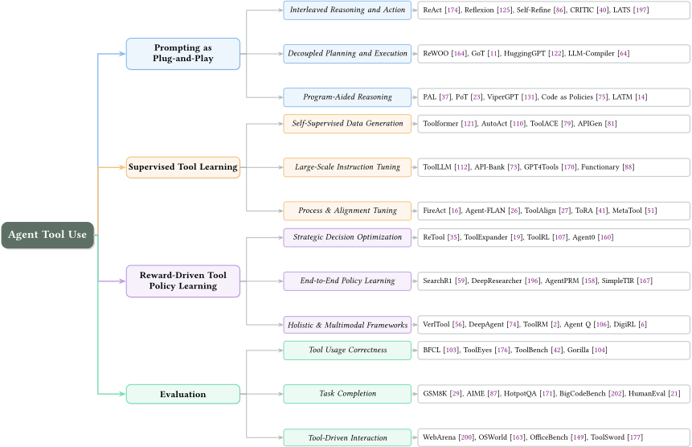
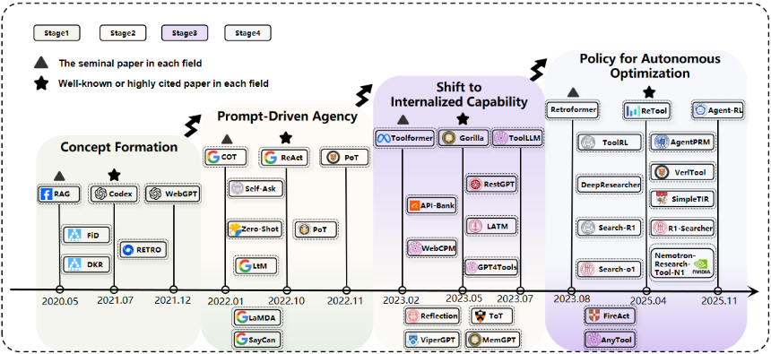
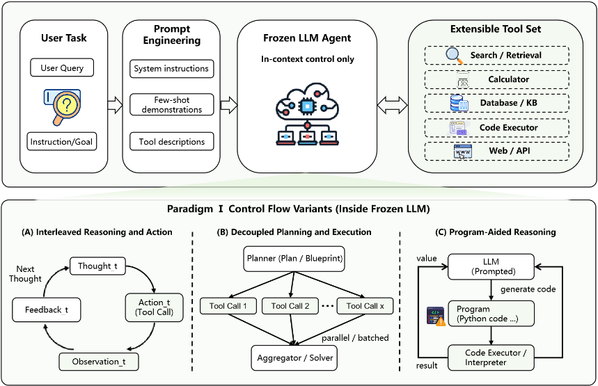
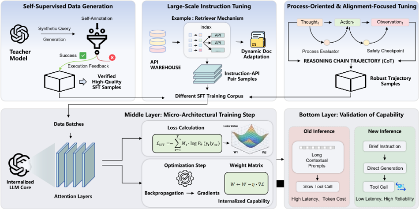
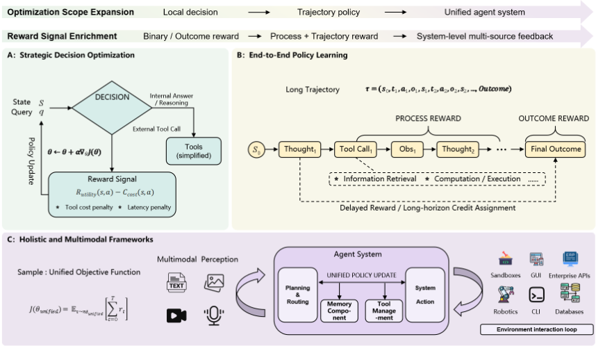

大语言模型中的 Agentic 工具使用：综述
该综述针对 LLM Agent 工具使用研究分散于不同任务、工具类型与训练设置、缺乏统一演进视角的问题，将现有方法组织为三大范式：即插即用式提示（冻结模型经 ReAct、ReWOO、PAL 等提示结构驱动工具调用）、监督式工具学习（Toolformer、ToolLLM 等以自监督数据生成与大规模指令微调把工具使用内化进参数）与奖励驱动的策略学习（ReTool、Search-R1 等用 RL 优化多轮工具交互）。综述同时把评测作为贯穿维度，梳理了从函数调用正确性（BFCL、API-Bank）到端到端任务完成、再到交互式环境与安全（WebArena、OSWorld、ToolSword）的基准演进。核心结论是三范式互补而非互斥，生产级系统大概率需要组合使用；未来方向包括 MCP 标准化、记忆与上下文管理、更高安全标准与人机协作工作流。对团队而言，这是一份覆盖工具调用、提示模式与评测选型的全景地图，可直接作为 Agent 架构与评测体系设计的决策参考。
现有 agentic tool use 研究碎片化地分布在不同的任务、工具类型与训练设置中，缺乏对工具使用方法如何差异与演进的统一视角；已有综述多为静态快照，未能刻画从提示驱动到监督学习再到强化学习的方法论演进及其设计权衡。论文旨在建立结构化、演进式的领域全景。
提出'三范式 + 贯穿式评测'的分类框架：(I) Prompting as Plug-and-Play——冻结模型通过提示与 in-context 交互使用工具，细分为交错推理与行动（ReAct、Reflexion、CRITIC、LATS）、解耦规划与执行（ReWOO、LLMCompiler、AdaPlanner）与程序辅助推理（PAL、PoT、Logic-LM）；(II) Supervised Tool Learning——通过自监督/合成数据生成（Toolformer、APIGen、ToolACE）、大规模指令微调（ToolLLM、Gorilla、xLAM）与过程导向及安全对齐微调（FireAct、ToolSword、ToolAlign）将工具使用内化到模型参数；(III) Reward-Driven Tool Policy Learning——以 RL 优化工具使用决策（ReTool、ToolRL）、多轮端到端策略（Search-R1、SimpleTIR、AgentPRM）与整体性/多模态框架（VerlTool、DigiRL）。评测被组织为工具使用正确性、任务完成、工具驱动交互三层，并讨论 MCP 标准化、记忆管理、安全可信与人机协作等工作流重塑方向。
未在论文中说明（本文为综述，未报告原创实验的量化结果；正文引用的量化事实包括 ToolLLM 的 ToolBench 数据集覆盖超过 16,000 个真实 RESTful API）
区别于已有综述偏重 Agent 架构静态快照、增强语言模型或工具分类与数据构建管线，本文以显式的方法论演进视角组织领域：刻画从 prompting 即插即用到监督工具学习再到奖励驱动策略学习的连续谱与权衡，强调三范式互补、生产级系统需组合使用，并将评测作为贯穿维度，追踪从函数调用正确性到交互式端到端任务成功与安全的评测演进。
相关度级别：high
命中能力域：3.1 上下文工程与记忆 | 3.2 提示工程 | 3.3 Agent 架构与工具使用 | 3.5 评测与可靠使用
理由：该综述直接命中团队多个核心能力域：其主体正是 3.3 的工具/函数调用与 Agent loop 控制流设计（ReAct、ReWOO、PAL、MCP 协议）；Paradigm I 完整覆盖 3.2 的提示技术与思维链/推理模式（CoT、Self-Consistency、Least-to-Most）；第 6 节的三层评测体系（函数调用正确性→任务完成→交互式环境与安全）对应 3.5 的评测基准与可靠性/安全实践；MemGPT、DeepAgent 的记忆折叠、Titans 长期记忆与 EasyTool 的文档上下文压缩涉及 3.1。对'把模型用好而非训练模型'的团队而言，这是一份可直接用于架构选型、提示模式选择与评测体系建设的全景参考，而非需要复现的研究论文。
建议动作：深入精读并做内部分享
arXiv:2604.00835v2 [cs.CL] 2026年6月29日
HU JINCHAO，计算机科学与技术学院，哈尔滨工业大学（深圳），中国；MEIZHI ZHONG，独立研究者，中国
KEHAI CHEN（通讯作者），计算机科学与技术学院，哈尔滨工业大学（深圳），中国
XUEFENG BAI，计算机科学与技术学院，哈尔滨工业大学（深圳），中国；MIN ZHANG，计算机科学与技术学院，哈尔滨工业大学（深圳），中国
大语言模型（LLM）正日益被部署为自主智能体（Agent），然而其在真实世界中的有效性取决于可靠的信息检索、计算与外部行动工具。现有研究在任务、工具类型和训练设置等方面仍较为碎片化，缺乏对各类工具调用方法如何差异与演进的统一视角。本综述将相关文献组织为三种范式：即插即用式提示、有监督工具学习与奖励驱动的工具策略学习，分析它们的方法、优势与失效模式，回顾评估现状并强调关键挑战，旨在解决这一碎片化问题，并为智能体工具调用提供更具结构化的演进视角。
CCS 概念：· 计算方法学 → 自然语言生成。
其他关键词与短语：大语言模型、智能体工具调用、提示工程、指令微调、强化学习
人工智能（Artificial Intelligence, AI）已经从早期基于规则的专家系统演进为现代的数据驱动机器学习 [12]。Transformer 架构 [139] 催化了这一转变，并促成了大语言模型（Large Language Models, LLMs）的兴起。BERT [31] 和 T5 [115] 等基础模型为自然语言理解与生成确立了强有力的范式。包括 Llama 2 [137]、Qwen [114]、Mixtral [55] 和 GPT-4 [97] 在内的后续模型展现出了前所未有的能力。这些模型在海量语料上进行预训练 [36]，在上下文理解、复杂推理 [66] 和内容生成方面表现出涌现优势 [152]。
然而，标准 LLM 本质上仍然是静态的。它们的知识受限于训练数据，这可能导致事实性错误或“幻觉” [70]。它们还难以获取实时信息、执行精确计算，或与外部系统进行可靠交互 [54]。这些局限性，加上从网络规模数据中继承而来的安全与偏见风险 [10]，制约了其在动态真实环境中的部署。
为了突破这些边界，智能体 AI（agentic AI）已成为一种核心范式 [89, 142, 193]。在这一范式中，LLM 充当推理核心，同时被增强了规划、记忆和行动能力。工具调用（tool use）是将行动能力付诸实践的关键机制 [121, 122]。通过调用外部工具（例如 API、数据库和代码解释器），LLM 智能体可以通过搜索获取最新知识 [92]，通过程序化执行提高计算准确性 [37]，并通过外部系统执行真实世界的操作 [122]。
作者联系方式：Hu Jinchao，哈尔滨工业大学（深圳）计算机科学与技术学院，中国深圳，jchu@stu.hit.edu.cn；Meizhi Zhong，独立研究者，中国北京，meizhi.zhong.1999@gmail.com；Kehai Chen（通讯作者），哈尔滨工业大学（深圳）计算机科学与技术学院，中国深圳，chenkehai@hit.edu.cn；Xuefeng Bai，哈尔滨工业大学（深圳）计算机科学与技术学院，中国深圳，baixuefeng@hit.edu.cn；Min Zhang，哈尔滨工业大学（深圳）计算机科学与技术学院，中国深圳，zhangmin2021@hit.edu.cn。
1
2
| Survey Paper | Chronological evolution | Paradigm taxonomy | Tool coverage | Training data | Evaluation landscape | Open challenges |
|---|---|---|---|---|---|---|
| Zhao et al. [193] | ✓ | ✗ | ✗ | ✗ | ✓ | ✓ |
| Wang et al. [142] | ✓ | ✗ | ✗ | ✗ | ✓ | ✓ |
| Mialon et al. [89] | ✓ | ✗ | ✗ | ✗ | ✓ | ✓ |
| Qu et al. [113] | ✗ | ✓ | ✓ | ✓ | ✓ | ✓ |
| Shen [123] | ✗ | ✓ | ✓ | ✓ | ✗ | ✓ |
| Chen et al. [20] | ✗ | ✓ | ✓ | ✓ | ✓ | ✓ |
| Ours | ✓ | ✓ | ✓ | ✓ | ✓ | ✓ |
| Survey Paper | Chronological evolution | Paradigm taxonomy | Tool coverage | Training data | Evaluation landscape | Open challenges |
工具调用日益增长的重要性推动了大量的研究活动，其中包括多篇试图对该领域进行结构化梳理的综述。现有综述涵盖了互补的视角：一些强调智能体架构（规划、记忆与行动）[193]；另一些回顾了增强型语言模型以及外部记忆/工具机制 [89, 190]；还有一些则聚焦于工具分类体系与数据构建流水线 [113]。尽管这些工作颇具价值，但其中许多框架提供的在很大程度上只是静态快照。尚未被充分阐明的是从即插即用式提示到有监督工具学习、再到奖励驱动的策略学习的方法论演进。这一缺失的演进视角可能同时掩盖各范式之间的连续性与权衡关系。表 1 从六个维度对代表性综述进行了比较：时间演进、范式分类、工具覆盖、训练数据、评估现状以及开放挑战。
在本文中，我们为基于大语言模型（LLM）的智能体工具调用领域做出了若干关键贡献：
在本综述中，我们以明确的演进视角对智能体工具调用进行综合梳理。我们将已有工作组织为三种方法论范式：（I）即插即用式提示，即通过提示与上下文交互引导冻结模型使用工具，而非更新权重 [162]；（II）有监督工具学习，利用有标注或合成的监督信号将稳健的工具调用行为内化 [122]；（III）奖励驱动的工具策略学习，通过强化与奖励反馈优化长程交互 [125]。我们进一步将评估作为一个贯穿性维度加以分析，并追踪其从函数调用正确性 [73] 到交互式环境中端到端任务成功的演进 [80]。通过这一视角，我们旨在为该领域提供一幅连贯的图景，厘清连接各范式的设计权衡，并将基础方法与新兴的自主智能体系统联系起来。图 1 总结了这一框架。
3

交错的推理与行动循环，将思考与行动混合在一起；以及解耦的规划与执行，将规划与行动分离开来。这种方法虽然高度灵活，但往往存在高延迟和高 token 成本的问题，并且在复杂的多步骤任务中，其可靠性可能较为脆弱。
4
值得注意的是，本综述强调这三种范式的互补性，并认为生产级系统很可能会将三者全部结合使用。我们进一步总结了尚未解决的挑战与有前景的研究方向，包括长程任务中的多工具信用分配、自主工具创建与自我扩展，以及将安全性、对齐与合规性融入已部署的智能体系统。本综述其余部分的组织结构如下。我们首先在第 2 节介绍本综述的背景，梳理大语言模型（LLM）工具调用的发展时间线。随后我们讨论三种方法论范式：即插即用式提示（第 3 节）、有监督工具学习（第 4 节）与奖励驱动的工具策略学习（第 5 节）。我们将评估视为一个贯穿全文的维度，并在第 6 节总结评估的科学方法与基准测试。最后，我们在第 7 节总结三种互补的范式并讨论未来展望，以此结束本文。
在本节中，我们梳理智能体工具调用（agentic tool use）的发展轨迹，追溯其从朴素的神经符号（neuro-symbolic）概念演进到当今复杂且具备自我优化能力的智能体的历程。这一进程涵盖了最初的理论蓝图、基于提示的推理框架的出现，以及向数据驱动内化与强化学习的转变。图 2 展示了界定这一时间线的关键里程碑。

智能体工具调用的概念基础早在现代指令微调大语言模型（LLM）兴起之前便已形成。当研究者认识到纯参数化模型在事实更新、精确计算以及与外部环境交互方面存在局限时，早期工作便开始借助外部资源来增强语言模型，而非单纯依赖规模扩展。其中一个重要步骤是检索增强生成（RAG）[70]，它表明将生成器与非参数化记忆相结合能够改善知识获取并减少幻觉。这一思路随后被 MRKL [63] 进一步推广，其将语言模型视为一个中央路由器，能够将子问题分派给专用模块和符号系统。
5
与此同时，若干工作超越了静态增强，转向显式交互。WebGPT [92] 证明模型可以通过浏览网页为长篇问答收集证据，而 LaMDA [135] 则将计算器、翻译器等工具融入对话生成，展示了将回答锚定（grounding）于外部实用工具的价值。在信息获取之外，TALM [101] 探索了如何通过监督学习训练较小的模型生成工具调用并利用返回的结果，提供了面向 API 的工具调用的早期实例。
工具的概念也扩展到了传统 API 之外。Codex [21] 表明语言模型可以通过生成可执行代码来解决问题，实际上是将程序执行视为一种外部计算接口。与此并行，SayCan [4] 通过将语言模型先验与机器人可供性（affordance）相结合，将这一范式扩展到具身场景，使 LLM 能够指导物理动作的选择。这些早期研究尚未构成通用智能体，但它们确立了后续系统的关键要素：外部知识获取、模块化路由、可执行动作，以及与数字或物理环境的锚定式交互。
在这些早期探索的基础上，研究者开始观察到，大语言模型无需修改自身参数即可表现出有效的工具调用行为。这一阶段的特征是提示工程与上下文学习（in-context learning），二者使得通过合适的推理与交互脚手架从冻结模型中诱发出类智能体行为成为可能。思维链（Chain-of-Thought, CoT）提示 [153] 奠定了基础，其表明 LLM 能够通过显式的中间推理来解决复杂任务。在这一思想的基础上，ReAct [174] 通过“思考-行动-观察”（Thought-Action-Observation）循环将推理与外部动作联系起来，使模型能够决定何时调用工具，并依据返回的观察结果更新后续步骤。Self-Ask [105] 进一步凸显了将复杂问题分解为更简单子问题的价值，尤其是在工具辅助的问答中。随着任务变得更具挑战性，Reflexion [125] 引入了自我反思式的言语反馈，帮助智能体从过去的失败中学习；Tree of Thoughts [173] 则将线性推理扩展为对多条候选轨迹的搜索，提升了规划的灵活性。
与此同时，另一条研究路线通过将部分推理转移到可执行的中间表示上，提升了可靠性。Program-Aided Language Models [37] 与 Program of Thoughts [23] 利用代码生成将计算外部化，提高了在算术与符号问题上的精确性。ViperGPT [131] 与 Binder [28] 将这一思想扩展到多模态与神经符号（neural-symbolic）场景，在这些场景中，代码充当协调外部工具的结构化接口。随着工具生态的不断壮大，研究者还探索了更加模块化的编排形式。ART [100] 从工具增强的推理模板中进行选择，Chameleon [82] 将工具视为可组合的模块，ReWOO [164] 将规划与执行解耦以降低交互开销，HuggingGPT [122] 则将 LLM 构建为统辖多种专家模型的中央控制器。
提示驱动的智能体能力也开始超越单轮任务求解，迈向持续且开放式的行为。Generative Agents [102] 证明了记忆在持续性智能体行为中的作用，MemGPT [98] 引入了一种用于处理长上下文交互的记忆管理机制，Voyager [141] 则表明基于提示的智能体能够在具身环境中持续获取并完善技能。这些工作标志着一个独特的阶段：工具调用、规划与记忆主要可以通过提示来激发，从而为后续基于训练与策略驱动的智能体系统奠定了实践基础。
6
随着基于提示的工具调用能力日益增强，其局限性也愈发明显。重复提示会引入大量延迟和 token 开销，而较长的推理-行动轨迹在复杂任务中往往仍然脆弱。这些挑战促使研究从在上下文中激发工具调用转向通过训练将其内化，使模型能够更高效、更可靠地调用工具。早期工作探索了对工具增强行为的有监督模仿。WebCPM [111] 表明，语言模型可以在人类网页浏览轨迹上进行微调，以实现目标导向的交互；Toolformer [121] 进一步证明，模型可以通过在自身训练数据中插入工具调用标注，自学何时以及如何调用 API。这一方向随后被扩展到指令微调场景：ToolAlpaca [133] 使用了来自更强模型的合成监督，而 ToolLLM [112] 则将训练扩展到数千个真实世界的 API。
随着工具数量和多样性的增加，内化的工具调用也需要更好的选择、适应与评估机制。API-Bank [73] 提供了一个早期的基准测试（benchmark），用于评估基于 API 的交互中的规划、工具调用与响应生成。为了在大规模工具库下提升可扩展性，AnyTool [34] 引入了层次化检索，以便在调用之前缩小候选空间。外部接口的动态性带来了另一个挑战，因为 API 会随时间不断演化，新工具也持续出现。Gorilla [104] 通过将检索与 API 感知的微调相结合来应对这一问题，使模型能够在推理时使用最新的文档。RestGPT [126] 和 GPT4Tools [170] 等相关工作进一步探索了与 RESTful API 的结构化交互以及专用工具调用数据的生成。
后续工作日益聚焦于鲁棒性、迁移能力，以及智能体行为与通用能力之间的平衡。FireAct [16] 表明，在推理与动作交替的轨迹上进行微调能够显著提升较小开源模型的性能。NexusRaven [127] 进一步研究了对未见工具的泛化问题，强调依据工具描述实现准确的函数调用；APIGen [81] 则通过可验证的合成 API 调用生成提升了数据质量。与此同时，研究者开始探讨如何将工具专门化与更广泛的模型能力相整合。Lemur [166] 提出了一个在函数调用、工具规划与通用语言理解之间取得平衡的统一框架；AgentTuning [183] 进一步强调了在针对智能体行为进行优化的同时保持通用推理能力的重要性。这些研究标志着工具调用从通过提示学习转向在模型权重中学习，确立了监督微调（supervised fine-tuning）与合成数据生成作为构建更高效、更可扩展且更鲁棒的工具调用智能体的可行路径。
提示即插即用（Prompting as plug-and-play）是指一类依赖提示与上下文交互、而非参数更新的工具调用方法。在这种范式下，语言模型保持冻结，作为核心的推理与协调模块，而工具调用行为则通过指令、示例以及来自外部环境的反馈来激发。这种设计具有若干实用优势，包括灵活性、可解释性和低部署成本，因而特别适合快速原型开发以及适配新引入的工具。与此同时，由于模型并未将工具调用行为内化到其参数中，这类方法在复杂或长程任务中往往存在延迟较高、性能不够稳定的问题。为了更好地组织这一范式，我们根据推理、规划与执行之间的协调方式，将现有方法归纳为三种代表性结构：推理与动作交织（Interleaved Reasoning and Action）、规划与执行解耦（Decoupled Planning and Execution）以及程序辅助推理（Program-Aided Reasoning）。如图 3 所示，这三种类别刻画了冻结的大语言模型（LLM）与外部工具交互的主要控制流。
范式 I 中的一种代表性结构是推理与动作交织，它将问题求解视为 Agent 与其环境之间的多轮交互。模型并非在行动之前完成全部推理，而是在中间思考与外部操作之间交替进行，并利用来自环境的观察结果来指导后续决策。这一路线的代表性起点是 ReAct [174]，它将推理轨迹与任务特定的动作交织在一起，使模型能够基于新获取的信息显式地决定下一步要做什么。这种设计有助于缓解抽象推理与外部执行之间的脱节，并已成为基于提示的工具调用的一种经典控制回路。
后续工作从多个方向对这种交织式循环进行了扩展。其中一条路线专注于通过自我纠正与迭代改进来提升鲁棒性。Reflexion [125] 在标准交互循环的基础上引入了语言形式的自我反思，使 Agent 能够批判失败的轨迹并在后续尝试中复用这些反思；而 Self-Refine [86] 则表明，模型可以通过自我生成的反馈迭代地改进自身的中间推理或最终输出。另一条路线引入了显式的验证机制。Chain-of-Verification [32] 提示模型在给出修订后的答案之前，先针对其自身的论断生成验证问题；CRITIC [40] 则进一步将这一过程锚定于外部工具，利用搜索引擎和其他实用工具来验证中间或最终输出。为了更好地处理需要前瞻与探索的任务，LATS [197] 将 ReAct 的交互循环与树搜索相结合，从而能够对备选的推理-动作轨迹进行更审慎的探索。

相关的提示技术可以进一步强化这一范式，尽管它们本身并非交织式的工具调用框架。Self-Consistency [148] 通过聚合多条采样得到的推理路径来提升鲁棒性；Least-to-Most Prompting [199] 鼓励将问题分解为更简单的子问题；Take a Step Back [194] 则提倡在低层动作选择之前先进行抽象。这些方法表明，仅凭提示就能支持推理、行动、观察与修订的紧密耦合循环，从而使交织式控制成为基于提示的 Agent 式工具调用中最具影响力的架构之一。
范式 I 中的第二种代表性结构是解耦式规划与执行（decoupled planning and execution），它将高层推理与下游的工具调用分离开来。与交织式推理-行动循环相比，这种设计减少了每一步所需的重复深思，并且在任务需要较长的工具链或多个相互依赖的操作时能够提升效率。模型不必在每次观察之后都交替进行思考和行动，而是首先生成一个结构化的计划，然后通过外部工具执行该计划，从而使规划与执行能够得到更显式的处理。
这一路线的代表性起点是 ReWOO [164]，它通过引入规划器-工作者（planner-worker）架构将推理与观察解耦。规划器首先生成一系列带有变量赋值的可执行子任务，随后由工作者执行这些子任务，而无需模型在每次中间观察之后都重新规划。这种设计降低了交互开销，并使工具调用更加高效。后续工作进一步
Manuscript submitted to ACM
9
将这一思想扩展至更丰富的调度与更具自适应性的控制。LLMCompiler [64] 将工具调用组织为依赖感知的计算图，并在子任务相互独立时支持并行执行；AdaPlanner [128] 则表明，解耦式规划仍可通过根据环境反馈修订计划来保持自适应性。
相关方法探索了规划优先控制的相近形式。Plan-and-Solve Prompting [143] 强调了在求解任务之前先生成显式计划的价值；Skeleton-of-Thought [94] 同样通过在展开细节之前先产出粗略提纲来提升效率。在更结构化的场景中，PEARL [129] 将规划-执行（plan-and-execute）策略应用于长文档，使模型能够将基于文档的任务分解为可管理的动作。另一些系统则将解耦式控制扩展到更广泛的工具编排。ART [100] 从外部任务库中检索合适的推理-行动程序；Chameleon [82] 通过模块化执行流水线来组合工具；HuggingGPT [122] 和 TaskMatrix.AI [76] 等系统则进一步展示了 LLM 如何充当统管多种专家模型与 API 的中央规划器。这些方法表明，将规划与执行分离开来，为紧密交织式控制提供了一种实用的替代方案，尤其是在工具调用需要结构化分解、更低延迟或跨多个模块协调的情况下。
第三种子范式旨在应对 LLM 在纯粹以自然语言进行推理时容易出现算术与逻辑错误的倾向，其做法是将中间表示从文本转移到可执行代码。在这种设定下，外部程序执行器不再仅仅是辅助工具，而是成为推理过程本身的一部分。PAL [37] 与 PoT [23] 是这一路线的代表性起点，它们通过提示（prompting）使模型生成 Python 程序，从而将计算外化，并将推理与执行解耦。为进一步增强逻辑严谨性，Logic-LM [99] 将自然语言问题转化为可由外部逻辑求解器求解的符号化表述，从而提升演绎推理任务的确定性。
这种以程序为中心的视角后来被扩展到更广泛的执行环境。Chain of Code [71] 将基于代码的推理拓展到纯可执行计算之外，允许模型将可运行代码与灵活的伪代码混合使用，从而使语义子任务仍能通过由语言模型增强的代码模拟器来处理。ViperGPT [131] 将类似理念应用于视觉推理，由模型生成 Python 代码来调用视觉 API 并组合多模态操作。在具身场景中，Code as Policies [75] 进一步表明，自然语言指令可以通过预定义的控制 API 编译为机器人策略代码，从而将程序辅助推理扩展到动作生成。
同一思想还催生了更为高级的工具创建与复用形式。MathPrompter [53] 通过生成多个候选 Python 函数并检查其执行结果之间的一致性来提升可靠性。LATM [14] 更进一步，使 Agent 能够为未见过的任务创建可复用的 Python 工具；CREATOR [108] 则通过将工具创建与下游决策执行相分离，进一步将这一过程形式化。这些方法表明，在提示过程中，代码不仅可以被用作执行后端，还可以被用作推理、控制乃至工具发明本身的结构化媒介。
与仅依赖提示的方法相比，这一范式将重点从在推理阶段从外部引出工具调用行为，转向通过训练将其内化。监督式工具学习（Supervised Tool Learning）不再仅依靠提示来支撑推理与工具调用，而是利用标注或合成的监督信号，将工具调用模式直接 Manuscript submitted to ACM
10
编码到模型参数中。这一转变提升了效率、稳定性与可扩展性，同时使模型能够在多样的工具与任务设置中更可靠地泛化。在这一设定下，核心挑战不仅在于如何大规模获取训练数据，还在于如何设计能够刻画工具语法、调用语义、规划结构以及对齐需求的监督信号。如图 4 所示，这些类别共同展示了不同形式的监督如何使模型获得并内化工具调用能力。

范式 II 的一个自然起点，是通过自动构建工具调用监督来减少对代价高昂的人工标注的依赖。早期工作探索了自监督数据生成，即模型通过标注或模拟自身的交互轨迹来学习工具调用模式，而非完全依赖人工整理的示例。这一路线中一个代表性的起点是 Toolformer [121]，它表明语言模型可以用 API 调用及相应的输出为其自身的训练语料添加标注，从而在极少人工监督的情况下学会应当何时以及如何调用外部工具。更具体地讲，其关键思想是：只有当候选工具调用的返回结果能够在基础语言建模目标下改进下一词元（next-token）预测时，才保留该调用。这可以表示为在插入工具响应之后预测损失的降低：
其中 𝑐 表示原始上下文，𝑟 表示工具响应，𝑥 𝑖 表示待预测的后续词元。这一准则把握住了自监督工具标注的核心直觉：一个工具调用之所以有用，不仅仅是因为它在语法上有效，更是因为它能以可度量的方式改进模型对接下来内容的预测。
后续工作将这一思想从局部自标注扩展到了更丰富的合成轨迹生成。ToolAlpaca [133] 利用由更强模型生成的合成工具调用示例来训练较小的开源 LLM，Manuscript submitted to ACM
11
表明经过指令微调的工具调用行为能够通过生成的语料得到有效迁移。AutoAct [110] 通过为工具增强的智能体自动合成规划轨迹，进一步降低了对手工构建示例的依赖，使得能够从有限的初始监督中自举出智能体行为。
随着研究重点从轨迹生成转向函数调用质量，后续工作越来越强调可验证性与数据质量控制。APIGen [81] 提出了一种用于生成和验证 API 调用训练数据的多阶段流水线，通过可执行验证提升了合成监督的可靠性。ToolACE [79] 进一步发展了这一方向，提出了一个自演化框架，将 API 增强、对话合成与分层验证相结合，以生成更高质量的工具调用数据。Confucius [38] 则通过引入内省反馈与课程式精炼对这些工作加以补充，强调合成数据生成不仅可以依靠规模来改进，还可以依靠逐步结构化的监督来改进。这些方法表明，自监督与合成数据生成为大规模训练使用工具的模型提供了切实可行的基础，尤其是在人工收集高质量轨迹代价高昂或不可行的情况下。
一旦合成监督与自监督监督变得可行，范式 II 的重心便从数据构建转向了规模与泛化。目标不再是针对一小组预定义工具训练 Agent，而是构建能够处理数千个多样化真实世界 API、并在不同领域与接口之间具备更强泛化能力的模型。这一方向上的一个代表性转折点是 ToolLLM [112]，它提出了 ToolBench——一个覆盖超过 16,000 个真实世界 RESTful API 的大规模数据集，并表明在广泛的 API 语料上进行指令微调（instruction tuning）能够大幅拓展工具调用能力的范围。
随着工具库变得更大且更具动态性，大规模微调也需要对检索、适配与工具选择提供更好的支持。Gorilla [104] 通过检索感知训练解决了 API 演化问题，使模型能够以检索到的文档为条件进行工具调用，而非仅仅依赖静态的参数化记忆。API-Bank [73] 补充了这一方向，强调从大型候选池中选择合适工具所需的规划与检索能力。为进一步提升可扩展性，AnyTool [34] 在大型工具集上引入了分层检索，而 EasyTool [181] 则通过将冗长的文档转换为更节省 token 的表示来降低上下文开销。
近期的工作日益聚焦于在实际函数调用场景中提升调用效率与泛化能力。Octopus v2 [22] 通过一种针对函数参数的轻量级映射策略优化了延迟，ToolkenGPT [43] 则将工具表示为参数化的 token 嵌入，从而在不过度扩展词表的情况下支持大规模工具集合。在更专门化的高性能函数调用方面，xLAM [187] 面向大型动作空间，而 Granite-Function-Calling [1] 通过多任务学习改进了参数预测。Functionary [88] 进一步强调对话式交互与函数调用的紧密集成，NexusRaven [127] 则突出了对未见工具定义的鲁棒零样本泛化能力。这些方法表明，大规模指令微调正在超越孤立的工具调用示范，迈向能够以日益提升的效率与可靠性来检索、解读并调用广泛工具生态系统的通用模型。
第三个子范式超越了函数调用的简单正确性，转而优化导向工具调用的推理过程，并使该过程与人类偏好及安全要求保持一致。如果底层推理依据存在缺陷、脆弱或与预期目标不一致，那么仅仅执行工具是不够的。这一方向上一个代表性的早期工作是 FireAct [16]，该工作表明，在推理轨迹上进行微调比仅采用直接的输入-输出监督能更好地内化问题求解结构。ToRA [41] 进一步强化了这一路线，其在交错的推理-动作轨迹上进行训练，且每次工具调用前均带有明确的推理依据，从而有助于弥合语言推理与可执行动作之间的语义鸿沟。Synapse [195] 则将这一思想加以扩展，把智能体轨迹蒸馏为能够指导后续决策的范例。
另一条研究路线专注于使这些推理过程更加鲁棒且更具判别力。Masked Thought [17] 引入了一种训练目标：遮蔽推理链中的部分内容，并要求模型恢复缺失的逻辑，从而抑制表层的模式匹配。Agent-FLAN [26] 将智能体能力分解为格式遵循与推理两个方面，并利用负样本来减少幻觉性动作。在依赖检索的场景中，RAFT [189] 通过训练模型区分相关与不相关的检索文档，进一步提升了鲁棒性，这在工具调用依赖外部信息源时尤为有用。
一旦使用工具的模型被部署到真实环境中，对齐与安全性就变得愈发重要。ToolAlign [27] 提出了 H2A 原则，在工具调用监督中平衡有用性、无害性与自主性。ToolSword [177] 更为直接地针对安全对齐，通过构建诸如提示注入攻击等对抗性场景来实现鲁棒的工具调用训练；而 RoT [178] 则通过在训练期间让模型接触不完善的工具文档，提升了噪声条件下的稳定性。MetaTool [51] 对这些工作形成了补充，它训练模型在尝试调用之前先评估是否确实需要某个工具。最后，若干工作强调，工具方面的专精不应以牺牲更广泛的能力为代价。Lemur [166] 在统一框架内平衡了函数调用、规划与通用语言理解，而 AgentTuning [183] 则通过将面向智能体的监督数据与普通对话数据相混合，保留了通用能力。这些方法表明，面向工具调用的微调不仅必须优化模型能否调用工具，还必须优化它如何推理、何时行动，以及其行为能否保持对齐、鲁棒并具备广泛的能力。
与主要借助静态监督来内化工具调用行为的前一范式相比，本范式侧重于通过环境反馈来优化工具交互。其核心挑战不再仅仅是模型能否正确调用工具，还包括它应当何时行动、如何从失败中恢复，以及如何在多轮交互中改进其策略。正因如此，近期研究日益转向强化学习（RL），将工具调用视为一个序贯决策问题，而非纯粹的模仿问题。为了组织这一范式，我们根据策略优化的主导范围将现有方法归为三类：战略决策优化（Strategic Decision Optimization）、面向多轮推理的端到端策略学习（End-to-End Policy Learning for Multi-Turn Reasoning），以及整体式与多模态智能体框架（Holistic and Multimodal Agentic Frameworks）。如图 5 所示，这些类别体现了从优化单个工具调用决策，到为长时程与多模态智能体行为训练更通用策略的递进过程。
强化学习在这一范式中的最早应用聚焦于有关工具调用的高层战略决策。这一类工作并非优化完整的推理-动作轨迹，而是提出了一个更基础但十分重要的问题：智能体（Agent）何时应当调用外部工具，何时又应当转而依赖其内部知识？其目标不仅是提升准确性，还在于在工具的有效性与计算成本和延迟之间取得平衡。在实践中，此类战略性工具调用策略通常采用策略梯度（policy-gradient）风格的强化学习 Manuscript submitted to ACM
13

目标进行优化。一种广泛使用的方法是 PPO 的截断替代目标（clipped surrogate objective）：
其中
这里，ˆ 𝐴 𝑡 表示一次工具调用动作的估计优势（advantage），而截断操作通过防止相对前一策略出现过大的偏离来稳定策略更新。在战略决策优化的语境下，它刻画了智能体如何在奖励反馈下逐渐学会判断在给定状态下调用工具是否有益。
这一方向的代表性起点是 ReTool [35]，它将工具调用形式化为一个强化学习问题，并聚焦于学习在推理过程中何时应当使用外部工具。它并不假设更多的工具调用总是有益，而是优化一种奖励信号，使其偏向正确的结果，同时抑制不必要的调用，从而提升工具辅助推理的选择性与效率。ToolRL [107] 进一步简化了这一设定，表明经过精心缩放的基于结果的奖励本身就能为优化工具调用行为提供有效信号，从而减少了对更精细奖励工程的需求。
后续工作将战略优化扩展至能力扩展与自我改进。ToolExpander [19] 引入了一种动态多轮难例采样（hard-sampling）策略，在强化学习过程中识别持续失败的案例，并用更强的示范加以替换，实际上充当了面向较弱模型的课程（curriculum）。Agent0 [160] 在这一方向上更进一步，允许智能体同时充当课程的设计者与执行者，利用模糊动态策略优化（ADPO）在其当前
14
能力前沿附近生成任务，并在无需外部数据的情况下实现改进。在更专门的场景中，Arcee [144] 通过一个经强化学习训练的大型动作模型（Large Action Model）将这一思想扩展到特定领域的工作流，表明战略性策略优化同样能够支持结构化的企业动作空间。这些方法与其说关注完全的端到端自主性，不如说更侧重于改进关于智能体是否、何时以及如何行动的高层决策。
与战略决策优化相比，这一方向的工作直接优化多轮交互中的完整推理-动作策略。关键挑战不再仅仅是智能体是否应该调用工具，而是如何在长轨迹中分配信用——早期的错误可能会通过后续的推理和执行步骤传播。SearchR1 [59] 是这一方向的代表性示例，表明大规模强化学习可以仅从稀疏的结果奖励中训练智能体发展面向搜索的推理策略，如查询改写和信息综合。SimpleTIR [167] 通过在一个统一的强化学习循环中联合训练推理与工具执行，进一步将该设置推向端到端优化，减少了流水线式设计引入的不匹配。Retroformer [175] 和 TRICE [109] 等早期工作通过使智能体能够从回顾性执行反馈中学习，并改进长工具调用链中的信用分配，为这一方向提供了重要基础。
第二条研究路线试图通过引入更密集或更结构化的学习信号来提高这种优化的稳定性。AgentPRM [158] 将过程奖励建模适配到智能体任务中，根据中间步骤的前景及其朝目标的推进程度来评估它们。LeTS [188] 类似地结合过程级与结果级奖励，引导推理与检索行为的联合发展。RAGEN [151] 将这一视角扩展到自进化智能体，从先前的轨迹生成反思性修正数据，并利用这些数据在多轮强化学习期间强化纠错行为。
更近期的工作探索了端到端策略学习中更丰富的协调机制。MATPO [91] 引入了用于规划器-执行器协调的角色感知优化，在同一个智能体框架内将奖励分配到不同的功能上，从而能够同时改进委派与执行。Agent-R [180] 进一步将反思视为强化学习循环中的显式动作，允许智能体批判过去的行为，并将这些批判纳入未来的策略更新中。在这种设置下，强化学习不仅用于优化孤立的工具决策，还用于塑造智能体在扩展交互范围内如何搜索、恢复、协调和修正自身行为。
范式 III 的前沿正在超越基于文本的 API，扩展到涵盖多模态交互与整体系统优化。随着智能体被部署到丰富的视觉环境中，工具调用的定义也不断演进，将视觉感知、GUI 操作和长期记忆管理纳入其中。
VerlTool [56] 提出了一个面向智能体强化学习的整体性框架，并指出孤立地优化工具调用是不够的。它将整个智能体系统（包括其记忆模块和工具选择器）视为一个统一的策略，并对所有组件进行联合更新。DeepAgent [74] 对这一视角形成了补充，引入了一种自主记忆折叠机制，将过去的交互压缩为结构化的情景记忆，从而在长时程中保持连贯性。AgentRL [186] 通过异步的生成-训练流水线、统一的基于函数调用的 API 接口以及集中式的环境控制器，将这一路线拓展至可扩展的多轮与多任务训练，凸显了系统级基础设施在智能体强化学习中日益增长的重要性。稿件已提交至 ACM
15
RLFactory [15] 进一步支持了这一趋势，它提供了一个即插即用的基础设施，用于模拟工具环境和计算轨迹级奖励，从而促进自进化智能体的开发。
在视觉与具身智能体领域，Agent Q [106] 将引导式蒙特卡洛树搜索（MCTS）与自我批判机制相结合，使智能体能够通过自博弈在交互式网页环境中从成功与失败的轨迹中学习。SEAgent [130] 专注于从经验中学习的计算机使用智能体，采用一种自进化机制，智能体在其中自主探索操作系统（OS）环境并整理自身的指令微调数据。DigiRL [6] 针对在真实场景中训练设备控制智能体这一挑战，提出了一个可扩展的从离线到在线的强化学习框架，使智能体能够通过在 Android 设备上的自主探索来改进其 GUI 交互策略。
先进的框架还引入了结构先验与多模态接地（multimodal grounding）。GEPO [179] 从智能体经验中动态构建状态转移图，并利用图中心性引导探索，使其在开放式环境中趋向高影响状态。MGPO [50] 专门针对视觉推理，使智能体能够通过序贯决策逐步聚焦于图像的关键区域。OS-Copilot [157] 提出了一个用于构建通用计算机智能体的框架，可在多种应用中优化用户意图的满足程度。Cradle [132] 将这一思想扩展到通用计算机控制，使智能体能够通过屏幕观察和键盘-鼠标模拟来操作软件。ToolRM [2] 通过引入专门用于评估工具调用轨迹效率与正确性的结果奖励模型，为复杂的智能体强化学习提供更强的学习信号，从而与这些框架形成互补。
对智能体工具调用的评估与底层方法范式同步演进。早期的基准测试（benchmark）侧重于考察模型能否生成有效且符合模式（schema）的工具调用，从函数层面刻画工具调用的正确性。随着工具调用与推理和规划的结合日益紧密，评估扩展到静态数据集上的端到端任务成功。更近期的 benchmark 则进一步转向交互式、高保真的环境，在这类环境中，智能体必须适应不断变化的状态、从执行错误中恢复，并满足安全约束。沿着这一演进脉络，我们将现有的评估 benchmark 归纳为三个层次：工具使用正确性、任务完成，以及工具驱动的交互。
这一类别构成了智能体工具调用评估的诊断基础。它考察模型能否理解工具规范、判断是否有必要进行工具调用、从候选池中选择合适的函数，并生成结构有效且实参正确绑定的调用。与后续层次的评估不同，这一层次上的 benchmark 主要评估工具调用方面的局部能力，而非端到端任务的成功。本层次中的代表性 benchmark 总结于表 2 中。
（1）函数调用有效性。第一类工作评估的是，当相关函数可用时，模型能否生成结构正确的工具调用。Berkeley Function Calling Leaderboard（BFCL）[103] 已成为这一设定下被广泛使用的参考基准，强调在多样化调用格式下的函数选择、参数填充以及受 schema 约束的生成。然而，汇总式的通过/失败分数往往掩盖了失败实际发生的位置。为此，ToolEyes [176] 引入了更细粒度的诊断框架，将意图理解、格式对齐与工具选择方面的错误区分开来。T-Eval [25] 将诊断进一步推进，把工具调用分解为
16
| Year | Benchmark | Primary Focus | Executable | Compositional | Tool Source |
|---|---|---|---|---|---|
| Category I: Function-Call Validity | Category I: Function-Call Validity | Category I: Function-Call Validity | |||
| 2025 | BFCL [103] | Function-call validity | ✗ | ✗ | Curated functions |
| 2025 | ToolEyes [176] | Fine-grained error diagnosis | ✗ | ✗ | Curated functions |
| 2024 | T-Eval [25] | Step-wise invocation correctness | ✗ | ✓ | Curated functions |
| Category II: Tool Retrieval and Selection | Category II: Tool Retrieval and Selection | Category II: Tool Retrieval and Selection | |||
| 2023 | API-Bank [73] | API retrieval and selection | ✓ | ✓ | Simulated tools |
| 2024 | StableToolBench [42] | Large-scale tool selection | ✓ | ✓ | Real-world APIs |
| 2024 | Gorilla [104] | Retrieval over evolving APIs | ✓ | ✗ | Evolving API docs |
| Category III: Tool-Use Decisions | Category III: Tool-Use Decisions | Category III: Tool-Use Decisions | |||
| 2025 | When2Call [119] | Tool-use necessity | ✗ | ✗ | Curated functions |
| 2024 | WTU-Eval [93] | Whether-or-not tool usage | ✗ | ✗ | Curated functions |
| Category IV: Compositional Invocation | Category IV: Compositional Invocation | Category IV: Compositional Invocation | |||
| 2023 | NexusRaven [127] | Complex function calling | ✗ | ✓ | Curated functions |
| 2025 | NESTFUL [7] | Nested API calls | ✓ | ✓ | Curated APIs |
| Year | Benchmark | Primary Focus | Executable | Compositional | Tool Source |
中间步骤，从而能够沿整个轨迹评估推理与执行决策，而不仅仅在最终调用处进行评估。
（2）工具检索与选择。随着可用工具数量的增长，正确性不再仅限于符合 schema，还取决于模型能否从大规模候选集合中检索并选择出正确的工具。API-Bank [73] 为这一更宽泛的流程提供了早期 benchmark，涵盖模拟工具调用场景中的 API 搜索、规划与响应生成。StableToolBench [42] 将这一方向扩展至更可靠的大规模 benchmark，提升了针对真实世界 API 进行评估的可复现性。Gorilla [104] 则通过强调对不断演进的文档的适应来补充这些 benchmark，从而检验当 API 规范随时间变化时，模型能否保持正确的工具调用。
（3）工具调用决策。正确性的另一个同等重要的方面是判断工具调用本身是否恰当。许多早期 benchmark 都隐含地假设应当调用某个工具，但现实的智能体还必须决定何时直接回答、何时请求澄清，以及何时放弃调用。When2Call [119] 直接针对这一决策边界，评估模型能否在工具调用、追问澄清与不使用工具之间做出选择。WTUEval [93] 同样研究了“是否调用工具”这一决策问题，覆盖需要工具与工具可选两类设定，并强调即使下游工具可用，不必要的调用也可能降低整体性能。
这一类别评估的是：当工具被用作求解流程中的功能组件时，智能体（Agent）能否成功完成端到端任务，而不仅仅是生成一个语法上有效的调用。与诊断正确性类基准测试（benchmark）不同，任务完成类评估强调在真实输入、领域约束和执行反馈条件下最终任务的成功与否，从而同时刻画推理质量与经由工具实现的有效性。本层次中具有代表性的基准测试汇总于表 3。
| Year | Benchmark | Task Type | Tool Role | Executable | Open-Ended |
|---|---|---|---|---|---|
| Category I: Mathematical and Knowledge-Centric Reasoning Tasks | Category I: Mathematical and Knowledge-Centric Reasoning Tasks | Category I: Mathematical and Knowledge-Centric Reasoning Tasks | Category I: Mathematical and Knowledge-Centric Reasoning Tasks | Category I: Mathematical and Knowledge-Centric Reasoning Tasks | Category I: Mathematical and Knowledge-Centric Reasoning Tasks |
| 2025 | AIME 25 [87] | Competition math | Compute | ✗ | ✗ |
| 2023 | TabMWP [83] | Table math reasoning | Compute | ✗ | ✗ |
| 2023 | FreshQA [140] | Knowledge QA | Retrieve | ✗ | ✗ |
| 2023 | ToolQA [201] | Tool-augmented QA | Retrieve + compute | ✓ | ✗ |
| 2021 | MATH/ GSM8K [29, 46] | Foundation math | Compute | ✗ | ✗ |
| 2018 | HotpotQA [171] | Multi-hop QA | Retrieve | ✗ | ✗ |
| Category II: Programming and Data-Centric Task Execution | Category II: Programming and Data-Centric Task Execution | Category II: Programming and Data-Centric Task Execution | Category II: Programming and Data-Centric Task Execution | Category II: Programming and Data-Centric Task Execution | Category II: Programming and Data-Centric Task Execution |
| 2025 | BigCodeBench [202] | Code generation | Execute | ✓ | ✓ |
| 2024 | SWE-bench [58] | Software engineering | Execute + debug | ✓ | ✓ |
| 2024 | BIRD / Spider 2.0 [69, 72] | Text-to-SQL | Query | ✓ | ✓ |
| 2024 | DSBench [60] | Data science | Execute | ✓ | ✓ |
| 2024 | InterCode [168] | Interactive coding | Execute + debug | ✓ | ✓ |
| 2024 | SheetBench [85] | Spreadsheet tasks | Execute | ✓ | ✓ |
| 2021 | HumanEval / MBPP [5, 21] | Python coding | Execute | ✓ | ✓ |
| Category III: Scientific and Professional Domain Benchmarks | Category III: Scientific and Professional Domain Benchmarks | Category III: Scientific and Professional Domain Benchmarks | Category III: Scientific and Professional Domain Benchmarks | Category III: Scientific and Professional Domain Benchmarks | Category III: Scientific and Professional Domain Benchmarks |
| 2024 | SciBench [146] | Scientific reasoning | Compute | ✗ | ✗ |
| 2024 | SciCode [136] | Scientific coding | Execute | ✓ | ✓ |
| 2024 | BioPlanner [96] | Biological protocols | Plan + retrieve | ✗ | ✓ |
| 2024 | MedAgent-Bench [57] | Clinical tasks | Plan + retrieve | ✗ | ✓ |
| 2023 | ChemCrow [13] | Chemistry workflows | Plan + execute | ✓ | ✓ |
| Year | Benchmark | Task Type | Tool Role | Executable | Open-Ended |
(1) 数学与以知识为中心的推理任务。任务完成类评估的一条主要研究路线，考察的是当智能体配备计算器、代码解释器、搜索引擎或其他外部工具时，能否更可靠地求解推理问题。MATH [46] 与 GSM8K [29] 被广泛复用为基础测试平台，用于衡量工具调用能否改进多步数值推理；而 AIME [87] 与 MATH-500 [77] 则进一步将难度提升至竞赛级数学。TabMWP [83] 将这一设定扩展到基于表格的数学推理，求解此类任务通常需要解析结构化输入并执行基于公式的计算。在知识方面，HotpotQA [171] 仍然是面向多跳检索与答案组合的代表性基准测试，而 ToolQA [201] 则更直接地评估端到端问答，将外部工具作为求解过程中的功能组件。FreshQA [140] 通过聚焦快速变化的世界知识对这些基准测试形成补充，从而检验智能体能否完成仅靠静态参数化知识无法支持的信息获取任务。诸如 2WikiMultihopQA [47]、Natural Questions [67]、TriviaQA [61]、MMLU [45] 和 StrategyQA [39] 等更为通用的问答（QA）基准测试，也常被复用，以研究检索增强或工具增强能否提升最终答案质量。
18
(2) 编程与以数据为中心的任务执行。第二条评估路线关注 Agent 能否在可执行反馈下完成编程、数据库和数据分析任务。HumanEval [21] 和 MBPP [5] 为基于执行的代码生成提供了经典的起点，而 BigCodeBench [202] 通过要求在大量 API 上进行库密集型的代码生成，显著提升了任务的真实性。在函数级合成之外，SWE-bench [58] 通过要求 Agent 在现有代码库中解决真实世界的 GitHub issue 来评估仓库级软件工程，这使其与端到端的 Agent 式编程尤为相关。BIRD [72] 和 Spider 2.0 [69] 将任务完成扩展到企业级规模的 text-to-SQL 场景，其成功取决于对 schema 的理解、规划以及可执行查询的生成。DSBench [60] 和 DS-1000 [68] 进一步将这一空间拓展到真实的数据科学工作流，涵盖从数据清洗到模型开发的过程。在更专门的场景中，FinQA [24] 专注于金融文档上的数值推理，SheetBench [85] 处理电子表格操作，而 InterCode [168] 则对带有执行反馈的交互式编程进行了标准化，使 Agent 能够在任务求解过程中调试并完善脚本。
(3) 科学与专业领域基准测试（Benchmark）。任务完成评估也已扩展到科学和专业领域，在这些领域中，需要借助工具调用来满足特定领域的约束，而不仅仅是提升通用推理能力。SciBench [146] 测试 Agent 能否解决物理和化学问题，这些问题通常需要方程处理、单位感知推理以及基于代码的计算。SciCode [136] 则迈向以代码驱动的科学问题求解，涉及物理和材料科学等领域。BioPlanner [96] 评估生物实验方案的生成，强调结构化的流程规划与精确的函数检索。ChemCrow [13] 和 MedAgent-Bench [57] 进一步表明，任务完成类基准测试如今已覆盖有机合成和临床诊断等高风险工作流，在这些工作流中，Agent 必须将推理、专用工具与领域知识相结合，才能产出可操作的解决方案。
这一类别评估的是动态且有状态环境中的 Agent，在这类环境中，工具调用会直接影响外部世界。与静态问答（QA）或离线执行类基准测试不同，这些环境要求 Agent 随着环境的变化更新计划、从中间错误中恢复，并在现实约束下满足用户目标。因此，关注点从单次工具调用本身是否正确，转向一系列动作能否在交互环境中可靠地达成目标。表 4 总结了该层次的代表性基准测试。
（1）Web 环境。WebArena [200] 和 VisualWebArena [65] 通过提供高保真环境，确立了交互式 Web Agent 的核心基准测试路线，在这些环境中，Agent 必须依据文本与视觉观测在功能完备的网站中进行导航。WebVoyager [44] 将这一设定扩展到真实网站上的开放式 Web 任务，需要更鲁棒的规划与多模态接地。Mind2Web [30] 以覆盖多样 DOM 结构的离线轨迹对这些基准测试形成补充，使其适用于在全面在线部署之前评估泛化能力。在浏览器导航之外，GAIA [90] 评估需要工具调用、Web 访问与多步问题求解的通用助手类任务，而 TravelPlanner [161] 则聚焦于借助外部搜索工具的受限规划。WorldSense [9] 进一步将交互评估拓展到接地的 3D 环境，在其中 Agent 必须在行动的同时维持一致的世界模型。
（2）计算机环境。第二条研究路线评估与操作系统、应用程序和办公软件交互的 Agent。OS-Copilot [157] 和 OSWorld [163] 在各类真实的计算机任务中，通过终端命令、图形用户界面（GUI）操作和多模态感知对 Agent 的桌面控制能力进行基准测试。OmniACT [62]、ScreenAgent [95] 和 GUI-World [18] 进一步强调与图形界面的接地式交互，而 AndroidWorld [117]、Manuscript submitted to ACM
19
| Year | Benchmark | Trajectory | Target | Challenge | Signal |
|---|---|---|---|---|---|
| Web Environments | Web Environments | ||||
| 2024 | WebArena [200] | ✓ | Web | Navigation | Task success |
| 2024 | VisualWebArena [65] | ✓ | Web | Multimodal grounding | Task success |
| 2024 | WebVoyager [44] | ✓ | Web | Open-ended tasks | Task success |
| 2024 | GAIA [90] | ✓ | General assistant | Multi-step tool use | Task success |
| 2024 | TravelPlanner [161] | ✓ | Planning | Constraint satisfaction | Task success |
| 2023 | WorldSense [9] | ✓ | 3D environment | World-model reasoning | Task success |
| 2023 | Mind2Web [30] | ✗ | Web trajectories | Offline generalization | Trajectory match |
| Computer Environments | Computer Environments | ||||
| 2024 | OSWorld [163] | ✓ | Desktop / OS | Long-horizon control | Task success |
| 2024 | OS-Copilot [157] | ✓ | Desktop / OS | Console and GUI control | Task success |
| 2024 | OmniACT [62] | ✓ | Cross-app workflows | Scripted interaction | Task success |
| 2025 | AndroidWorld [117] | ✓ | Mobile / Android | App interaction | Task success |
| 2025 | AppWorld / AppAgent [138, 185] | ✓ | Mobile apps | App control | Task success |
| 2024 | ScreenAgent [95] | ✓ | GUI | Visual UI automation | Task success |
| 2024 | GUI-World [18] | ✓ | GUI | Multimodal grounding | Task success |
| 2024 | OfficeBench [149] | ✓ | Office software | Procedural workflows | Task success |
| 2024 | WorkArena [33] | ✓ | Enterprise platform | Workflow completion | Task success |
| 2024 | 𝜏 -bench [172] | ✓ | User + tools | Policy compliance | State outcome |
| 2024 | TheAgentCompany [165] | ✓ | Workplace simulation | Consequential tasks | Task success |
| 2024 | CodeAct [145] | ✓ | Interactive environments | Code as action | Task success |
| Safety and Reliability | Safety and Reliability | ||||
| 2024 | ToolSword [177] | ✗ | Tool outputs | Prompt-injection defense | Attack resistance |
| 2024 | InjEcT-Agent [184] | ✗ | Tool outputs | Indirect prompt injection | Attack resistance |
| 2024 | ToolEmu [120] | ✓ | Tool sandbox | Risk-aware interaction | Failure analysis |
| 2024 | SafetyBench [191] | ✗ | Safety scenarios | Risk refusal | Safety judgment |
| 2024 | R-Judge [182] | ✗ | Risk evaluation | Risk awareness | Risk judgment |
| 2024 | PsySafe [192] | ✗ | Psychological safety | Manipulation resistance | Safety judgment |
| Year | Benchmark | Trajectory | Target | Challenge | Signal |
AppWorld [138] 和 AppAgent [185] 则将这一路线扩展到移动环境。在办公场景中，OfficeBench [149] 和 WorkArena [33] 评估与企业平台及办公软件的交互，其任务成功取决于长时程状态跟踪与流程正确性。近期的基准测试进一步迈向真实的数字化工作。𝜏-bench [172] 在领域策略与数据库状态约束下评估工具-Agent-用户交互，而 TheAgentCompany [165] 则在模拟的公司环境中，以结合网页浏览、代码执行与协作的具有实际影响的职场任务对 Agent 进行基准测试。CodeAct [145] 提供了一个互补视角，将可执行代码视为交互环境的统一动作空间。
(3) 安全性与可靠性。随着 Agent 在外部环境中采取行动的能力不断增强，评估还必须考察它们在对抗性或高风险条件下能否保持可靠与安全。ToolSword [177] 和 InjEcT-Agent [184] 聚焦于间接提示注入，测试嵌入在工具输出中的恶意指令能否劫持 Agent 的后续行为。ToolEmu [120] 从互补的角度应对这一问题，它利用由 LLM 模拟的沙盒来仿真高风险的工具执行，从而在不造成现实世界危害的情况下暴露危险的失效模式。R-Judge [182] 和 SafetyBench [191] 评估 Agent 能否识别并拒绝有风险的动作，而 PsySafe [192] 则将这一方向拓展至心理安全与抗操纵能力。总体来看，这些基准测试表明，交互层面的评估不仅关乎完成任务，还关乎在动作会产生真实后果时保持可靠性、策略合规性与安全行为。
随着 Agent 式工具调用（agentic tool use）范式从实验性原型逐步成熟为生产级系统，我们预计将有若干关键发展轨迹，它们将决定下一代自主 Agent 的形态。这些方向超越了仅仅提升 API 调用准确性的层面，旨在重塑 AI Agent 的基础架构、交互性以及与社会的融合。
20
当前工具调用 Agent 的生态系统呈碎片化状态，每引入一个新工具或新框架都需要定制化的集成。为了克服这一可扩展性瓶颈，该领域正在转向通用互操作协议，其中最著名的是模型上下文协议（Model Context Protocol, MCP）[49]。MCP 充当一种标准化接口，将 Agent 与工具的具体实现解耦，使开发者只需构建一次工具，任何符合该协议的 Agent 便可立即使用。这种标准化将集成问题从二次复杂度转化为线性复杂度。在协议之外，我们还观察到向标准化编排模式的转变。OpenAI Swarm [116] 为多智能体编排引入了符合人体工程学的模式，探索专用 Agent 之间的轻量级交接，而 AgentKit [156] 则为 Agent 式工作流的“强化微调”（reinforcement fine-tuning）提供了统一框架。我们预见，未来的工具库将不再是静态列表，而是动态的、符合协议的市场，Agent 可以实时查询并订阅。
未来的 Agent 将超越基于文本的 API 的局限，通过丰富的多模态接口与世界交互。Agent 不再仅仅依赖结构化的函数调用，而是正在演化为能够直接感知和操作图形用户界面（GUI）。2025 年的一个关键转变是专门为动作（action）预训练的"Agentic Foundation Models"（智能体基础模型）的出现。Magma [169] 代表了这一新型模型——一种多模态模型，能够解释输入并在数字与物理环境中对其进行定位（grounding），有效弥合了 UI 导航与机器人操作之间的鸿沟。作为补充，ShowUI [78] 引入了 UI 引导的视觉 token 选择机制，以高效处理高分辨率屏幕；而 OmniParser [84] 则提供了一个纯视觉的屏幕解析模块，可从截图中提取结构化元素，显著增强了通用模型（generalist models）的动作预测能力。此外，Agent-S [3] 建立了一个开放的智能体框架，像人类一样使用计算机，从经验中学习以执行复杂的跨应用任务。这些进展标志着从用视觉编码器修补 LLM 转向构建原生的“视觉-语言-动作”（Vision-Language-Action）模型。
要实现真正的自主性，智能体必须超越反应式的单轮执行，迈向系统 2（System 2）推理与终身学习。这就需要采用测试时扩展（test-time scaling）技术，即智能体在执行关键工具调用之前先进行深度前瞻搜索或自洽性（self-consistency）检查。SearchR1 [59] 等框架已经展示了将推理步骤内化的威力，但未来的智能体将更进一步，主动管理自身的记忆。Titans [8] 提出了一种神经长期记忆模块，可在测试时学习记忆历史上下文，使智能体无需重新训练即可在海量交互历史中处理“大海捞针”（needle-in-a-haystack）式检索任务。System 2 Attention [154] 使智能体能够动态地重新生成自身上下文以聚焦于相关信息，而 Trove [150] 则促进了智能体工具库的持续演化。未来的智能体将不再在每次会话结束后重置，而是会精心维护由合成工具与使用模式构成的内部库，从而实现一种自洽性，使其动作日益高效，并与自身的历史经验保持一致。
除了提升工具使用效率之外，强化学习还可用于优化智能体行为层面的特定属性。Character-R1 表明，未来的智能体优化可能扩展到专门化场景中的角色感知推理与人格一致性 [134]。
21
随着智能体被赋予执行诸如修改数据库或管理金融交易等具有重大后果的操作的权限，安全性必须从次要指标提升为首要设计约束。未来的研究将聚焦于建立超越简单对齐调优的银行级安全协议。这包括针对可能劫持工具执行的间接提示注入开发鲁棒的防御手段，正如 InjEcT-Agent [184] 所强调的那样。NeMo Guardrails [118] 等工业界解决方案已开始提供可编程的安全层，用以强制执行行为边界，而 PromptArmor [124] 则为对抗性输入提供了检测机制。至关重要的是，我们必须应对欺骗性对齐（deceptive alignment）的风险，确保智能体不会学会通过隐藏错误或歪曲其工具使用情况来钻奖励系统的空子，这一现象在 Sleeper Agents [52] 中得到了研究。可信性将依赖于可验证的审计追踪和沙箱化执行环境，即使智能体的自主性不断提升，也能保证人类始终拥有控制权。
最后一个方向是人类与智能体的共生（human-agent symbiosis）与工作流重塑。正如 MetaGPT [48]、AutoGen [155] 和 OpenDevin [147] 等系统所展示的那样，工具调用的未来可能更多地体现在将人类监督与专用自动化组件相结合的协作式工作流之中，而非完全自主的单体智能体。与此相关，近期基于大语言模型（LLM）的多智能体系统研究表明，未来的智能体工作流可能日益依赖于跨多个专用智能体的系统级协调、角色分配与编排，而非单个单体智能体 [198]。在这种背景下，技能可能成为比端到端自主性更为实用的抽象：系统无需要求单个智能体从头到尾解决每一项任务，而是可以暴露诸如检索、编码、电子表格编辑、验证或领域特定分析等可复用能力，并在人类监督下对其进行灵活组合。这种以技能为中心的视角也有助于解释为什么更简单、更结构化的系统仍能保持高度竞争力。例如，Agentless [159] 表明，当任务结构清晰时，精心设计的流水线可能胜过更为复杂的长时程（long-horizon）智能体。这些趋势共同指向这样一个未来：智能体工具调用将由经校准的委派（calibrated delegation）、可复用技能以及人类与智能体之间具备工作流感知能力的协作所塑造。
在这篇综述中，我们系统地回顾了智能体工具调用的技术图景，考察了从提示到动态自主优化的转变。我们将该领域划分为三种不同的范式：范式 I 利用提示与基于上下文的策略，以即插即用的方式实现工具调用；范式 II 借助监督学习将稳健的工具调用能力内化；范式 III 则采用奖励驱动的策略学习，使智能体能够适应、自我纠正并从复杂的执行错误中恢复。与这些范式并行，我们将评估视为一个贯穿性维度，并调研了不断演进的基准测试（benchmark）生态系统——该生态已从评估孤立的函数调用正确性，发展到在贴近现实的仿真环境中衡量整体任务成功与安全性。我们希望本综述能为研究人员与从业者提供一条连贯的路线图，并助力加速工具调用智能体的发展，使其成为能力更强、更可靠且更标准化的自主智能体。
表 5 总结了本综述中所讨论的主要方法学论文。
33
| Paper | Year | Training Signal | Tool Scope | Multi-turn | Multi-tool | Setting | Affiliation |
|---|---|---|---|---|---|---|---|
| ReAct [174] | 2023 | Prompting / ICL | External actions | ✓ | ✓ | Reason-act loop | Princeton |
| Reflexion [125] | 2023 | Prompting + verbal feedback | External actions | ✓ | ✓ | Self-reflective interaction | Princeton |
| CRITIC [40] | 2024 | Prompting + interactive critique | Verification tools | ✓ | ✓ | Verification and correction | Tsinghua |
| LATS [197] | 2023 | Prompting + search | Search | ✓ | ✓ | Trajectory tree search | UIUC |
| ReWOO [164] | 2023 | Prompting / planning | General external tools | ✓ | ✓ | Decoupled planning | MSU |
| HuggingGPT [122] | 2023 | Prompting / orchestration | Expert models | ✓ | ✓ | LLM tool orchestration | ZJU |
| LLM-Compiler [64] | 2024 | Prompting / planning | Function calls | ✓ | ✓ | Parallel decomposition | UC Berkeley |
| PAL [37] | 2023 | Prompting / code generation | Code execution | ✗ | ✗ | Program-aided reasoning | CMU |
| PoT [23] | 2023 | Prompting / code generation | Code execution | ✗ | ✗ | Program-of-thought | Waterloo |
| ViperGPT [131] | 2023 | Prompting / code generation | Vision APIs | ✗ | ✓ | Visual reasoning | Columbia |
| Code as Policies [75] | 2022 | Prompting / code generation | Control APIs | ✗ | ✓ | Embodied control | |
| LATM [14] | 2024 | Prompting / tool creation | Python tools | ✓ | ✓ | Tool creation and reuse | Stanford |
| Toolformer [121] | 2023 | Self-supervised API annotation | APIs | ✗ | ✓ | API self-annotation | Meta AI |
| AutoAct [110] | 2024 | Synthetic planning trajectories | Tool-augmented agents | ✓ | ✓ | Trajectory synthesis | ZJU |
| ToolACE [79] | 2025 | Self-evolving synthetic data | Function calls | ✓ | ✓ | API/dialogue synthesis | SJTU |
| APIGen [81] | 2024 | Verifiable synthetic data | Function calls | ✗ | ✓ | API-call generation | Salesforce AI Research |
| ToolLLM [112] | 2023 | Instruction tuning | RESTful APIs | ✓ | ✓ | Large-scale API use | Tsinghua |
| API-Bank [73] | 2023 | Benchmark-driven supervision | APIs | ✓ | ✓ | Planning and API use | Alibaba DAMO |
| GPT4Tools [170] | 2023 | Synthetic data + instruction | Tool collections | ✗ | ✓ | Tool-use tuning | Tsinghua SIGS |
| Functionary [88] | 2024 | Instruction tuning | Function calls | ✓ | ✓ | Function calling | MeetKai |
| FireAct [16] | 2023 | SFT on reasoning trajectories | General external tools | ✓ | ✓ | Reason-act tuning | System2 |
| Agent-FLAN [26] | 2024 | SFT with negative samples | Agent actions | ✓ | ✓ | Agent tuning | USTC |
| ToolAlign [27] | 2024 | Alignment-oriented tuning | Tool-use environments | ✓ | ✓ | HHA alignment | RUC |
| ToRA [41] | 2024 | Rationale-augmented training | Mathematical tools | ✓ | ✓ | Tool-augmented math | Tsinghua |
| MetaTool [51] | 2024 | Supervised tuning | Tool selection | ✗ | ✓ | Tool selection | XJTU |
| ReTool [35] | 2025 | Reinforcement learning | General external tools | ✗ | ✓ | Strategic tool use | ByteDance Seed |
| ToolExpander [19] | 2025 | RL + hard-sampling curriculum | General external tools | ✓ | ✓ | Capability expansion | OPPO |
| ToolRL [107] | 2025 | Outcome-reward RL | General external tools | ✗ | ✓ | Tool-use optimization | UIUC |
| Agent0 [160] | 2025 | RL + self-generated curriculum | General external tools | ✓ | ✓ | Self-evolving tool use | UNC |
| Search-R1 [59] | 2025 | Reinforcement learning | Search / retrieval tools | ✓ | ✗ | Search-oriented reasoning | UIUC |
| DeepResearcher [196] | 2025 | Reinforcement learning | Web research tools | ✓ | ✓ | Deep web research | SJTU |
| AgentPRM [158] | 2025 | Process reward modeling | General external tools | ✓ | ✓ | Stepwise agent evaluation | FDU |
| SimpleTIR [167] | 2025 | End-to-end RL | General external tools | ✓ | ✓ | Joint reason-tool execution | NTU |
| VerlTool [56] | 2025 | Agentic RL | Tool selector + memory | ✓ | ✓ | Holistic optimization | UWaterloo |
| DeepAgent [74] | 2025 | Agentic RL framework | Scalable toolsets | ✓ | ✓ | General tool agent | RUC |
| ToolRM [2] | 2025 | Reward modeling | Tool-use trajectories | ✓ | ✓ | Tool-call reward modeling | IBM Research |
| Agent Q [106] | 2024 | Guided MCTS + self-critique | Web environment | ✓ | ✓ | Interactive web agents | MultiOn |
| DigiRL [6] | 2024 | Offline-to-online RL | GUI / device control | ✓ | ✓ | Android interaction | UC Berkeley |
| Paper | Year | Training Signal | Tool Scope | Multi-turn | Multi-tool | Setting | Affiliation |